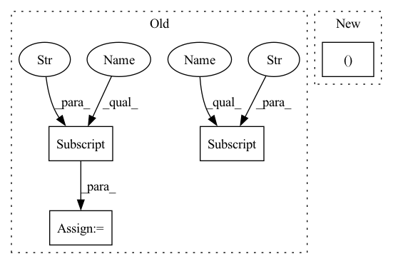

Pattern ID :2246
Before Change
shared_network_layers = []
// figure out how big the convolution output will be
conv_arch = DEFAULT_CNN_ARCHITECTURE ["CONV"]
dense_arch = DEFAULT_CNN_ARCHITECTURE["DENSE"] .copy() // copy to mutate
dense_in_dim = np.prod(sb_conv_arch_output_size(obs_space.shape[1:],
conv_arch))
dense_arch[0]["in_dim"] = dense_in_dimAfter Change
shared_network_layers.append(nn.Flatten())
// now customise the dense layers to handle an appropriate-sized conv output
dense_in_dimIn pattern: SUPERPATTERN
Frequency: 3
Non-data size: 4
Instances Fragment ID: 5377054
Project Name: humancompatibleai/eirli
Commit Name: c81e5c51ddb9f9ef758200547e175ef1cdeadc92
Time: 2020-08-21
Author: sam@qxcv.net
File Name: src/il_representations/algos/encoders.py
M Class Name: BasicCNN
N Class Name: DefaultStochasticCNN
M Method Name: __init__(3)
N Method Name: __init__(3)
M Parent Class: nn.Module
N Parent Class: nn.Module
M File Name: src/il_representations/algos/encoders.py
N File Name: src/il_representations/algos/encoders.py
M Start Line: 74
M End Line: 98
N Start Line: 64
N End Line: 95
Fragment ID: 5377072
Project Name: humancompatibleai/eirli
Commit Name: fab9035a007fdec23d6e152d31b2c429670aecf3
Time: 2020-08-21
Author: sam@qxcv.net
File Name: src/il_representations/algos/encoders.py
M Class Name: BasicCNN
N Class Name: DefaultStochasticCNN
M Method Name: __init__(3)
N Method Name: __init__(3)
M Parent Class: nn.Module
N Parent Class: nn.Module
M File Name: src/il_representations/algos/encoders.py
N File Name: src/il_representations/algos/encoders.py
M Start Line: 74
M End Line: 98
N Start Line: 64
N End Line: 95
Fragment ID: 5377060
Project Name: humancompatibleai/eirli
Commit Name: c81e5c51ddb9f9ef758200547e175ef1cdeadc92
Time: 2020-08-21
Author: sam@qxcv.net
File Name: src/il_representations/algos/encoders.py
M Class Name: BasicCNN
N Class Name: DefaultStochasticCNN
M Method Name: __init__(3)
N Method Name: __init__(3)
M Parent Class: nn.Module
N Parent Class: nn.Module
M File Name: src/il_representations/algos/encoders.py
N File Name: src/il_representations/algos/encoders.py
M Start Line: 74
M End Line: 98
N Start Line: 64
N End Line: 95
Fragment ID: 5377055
Project Name: ais-bonn/vp-suite
Commit Name: 26855fa809775b4b29b85405cbd3f513b4688da4
Time: 2022-01-17
Author: boltres@ais.uni-bonn.de
File Name: vp_suite/models/_base_model.py
M Class Name: VideoPredictionModel
N Class Name: VideoPredictionModel
M Method Name: __init__(2)
N Method Name: __init__(3)
M Parent Class: nn.Module
N Parent Class: nn.Module
M File Name: vp_suite/models/_base_model.py
N File Name: vp_suite/models/_base_model.py
M Start Line: 15
M End Line: 32
N Start Line: 18
N End Line: 30